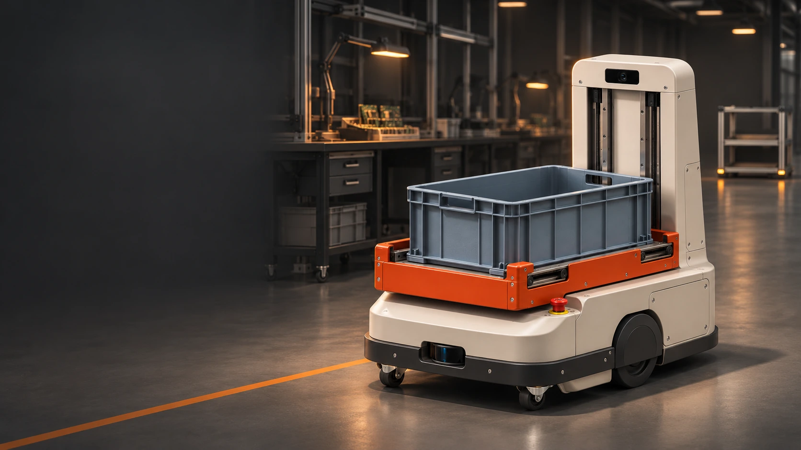
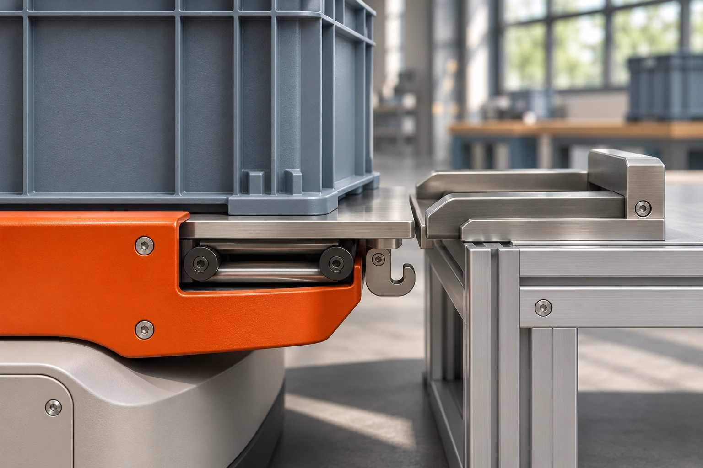

T1 / TOTE TRANSFER ROBOT工业设计概念图
设计目标基准工况 · 待样机验证
20kg单箱额定总重 · 含箱盘
350–850mm可对接承载面高度
≥6h单次充电连续作业
17.0箱/h50 m 单程 · 等待 15 s
取放机构
接稳，再出发。
牵引钩咬合转接托盘。站轨和车上托台接续支承，
整箱零件沿同一高度移交。

680 mm
水平伸缩行程。钩锁、重量与到位信号共同确认整箱已上车。
- 01 转接托盘
- 620 × 420 mm
- 02 水平牵引行程
- 680 mm
- 03 站口净宽
- ≥450 mm
作业仿真
跟一箱料，走一程。
切换补料或回空，在时间轴上查看对位、牵引和交付。
也可以让工位暂时被占，观察车辆在哪里等待。
单车节拍
这条线，一小时几箱？
按载箱去程、空车返程估算。
平均车速 0.8 m/s，两端取放各 20
s，利用率 85%。
独立回空工单、充电与计划停线另计。
一箱料的交付顺序
-
识站核箱
核对工单、站号与箱号，调整对接位置。
-
牵引锁箱
牵引托盘上车，称重和到位信号确认装载。
-
载箱转运
锁定托盘，降至 350 mm 运输位后驶向目标站。
-
双端确认
车端空载、工位有箱，登记一次交付记录。